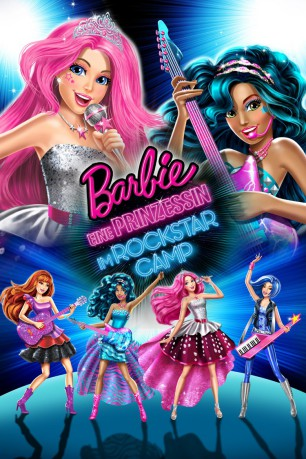

gesehen am 18.02.2017
gesehen am 18.02.2017Alternativ: Barbie in Rock 'N Royals gesehen am 18.02.2017
 
 IMDB-Wertung: 5.8 / 10
IMDB-Wertung: 5.8 / 10  Metascore:
Metascore: 
Prinzessin Courtney (Originalstimme: Kelly Sheridan) und die berühmte Rocksängerin Erika (Chiara Zanni) landen versehentlich in falschen Camps. Erika lernt im königlichen Camp, was eine echte Prinzessin ausmacht, und Courtney wird im Rockstar-Camp auf der anderen Seite des Sees beigebracht, was es braucht, um richtig zu rocken. Die Leiter beider Freizeitlager versuchen, die Verwechslung zu beheben, aber die beiden fühlen sich in der fremden Umgebung durchaus wohl. Doch es sieht so aus, als ob der Spaß bald vorbei ist: Courtney und Erika bekommen mit, dass beide Camps geschlossen werden sollen. Also arbeiten die beiden Damen von nun an trotz aller Unterschiede zusammen und bereiten sich gemeinsam auf ein großes Konzert vor. Sie wollen beweisen, dass alles möglich ist, wenn sie nur daran glauben…
Jahr: 2015
Dauer: 83 Minuten
FSK: 0
Land: Studio: Super RTLTonspuren: DTS - ,
Untertitel: Englisch,
Auflösung: 1080p (1920x1080) Größe: 4014 MB
Genre: Animation/Trick, Familie
Regisseur: Karen J. Lloyd
Drehbuch: Randall M. Badat
Soundtrack:
Darsteller:
 Chiara Zanni als Erika Juno
Chiara Zanni als Erika Juno Bethany Brown als Princess Genevieve / Allegra James
Bethany Brown als Princess Genevieve / Allegra James Michael Dobson als Finn Oxford
Michael Dobson als Finn Oxford Alessandro Juliani als Clive / Prince Reginald
Alessandro Juliani als Clive / Prince Reginald Peter Kelamis als Eddie
Peter Kelamis als Eddie Nicole Oliver als Lady Anne
Nicole Oliver als Lady Anne Kira Tozer als Princess Olivia / Stevie
Kira Tozer als Princess Olivia / Stevie Adrian Petriw als Prince Edmund
Adrian Petriw als Prince Edmund Kelly Sheridan als Princess Courtney / Svetlana Petranova
Kelly Sheridan als Princess Courtney / Svetlana PetranovaDatei: X:\Kinder Collections\Barbie\Barbie 34 Eine Prinzessin im Rockstar Camp (2015, FSK0, 1920x1080).mkv seit 06.02.2017
Festplatte: Kinder-Filme+Trick
 Es gibt insgesamt 40 Filme in der Gruppe 'Kinder Collections\Barbie'
Es gibt insgesamt 40 Filme in der Gruppe 'Kinder Collections\Barbie'